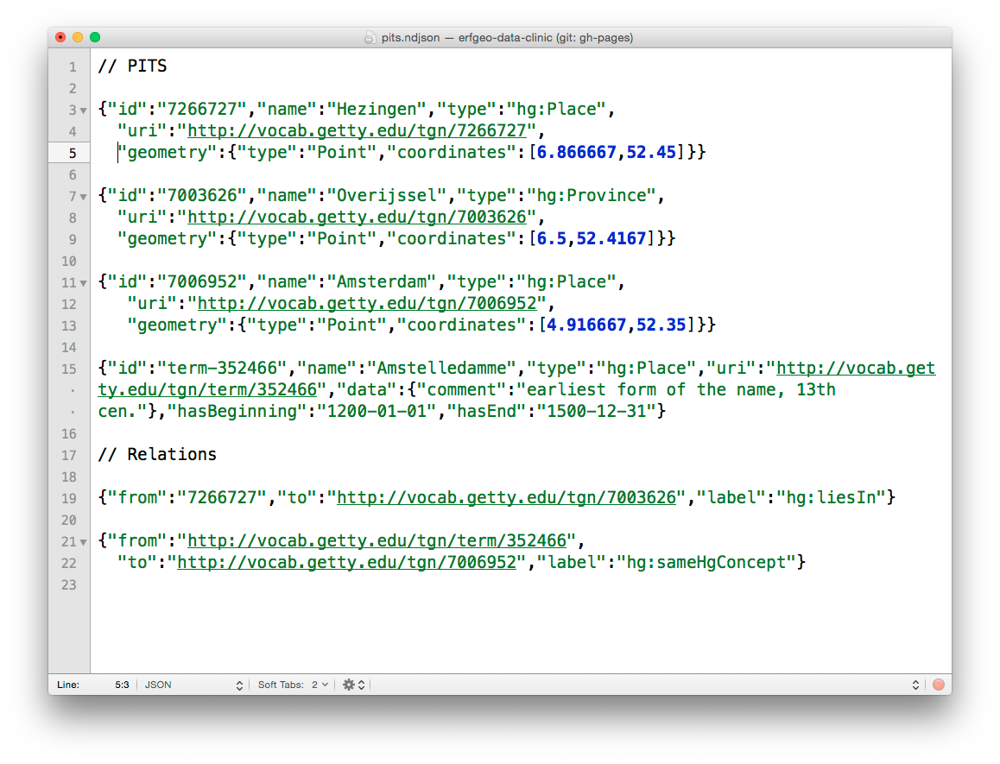

Histograph
Voorbeeld: Naarden

Histograph
Naarden,
Neerden,
Naerden,
Neerden in Hollant,
Nairden
Atlas van Loon
Naarden - Gieentegeschiedenis

Naarden - Bastions
Naarden - TGN
Relations
Hierarchies

Naarden - GeoNames
Naarden - ILVB
Relations
PITs
NDJSON
Onderzoeken van databronnen, herkennen van plaatsnamen, en verbanden!
Archief, Excel, erfgeo.nl, NDJSON, Histograph
Sources
API

Vieuwer
Histograph